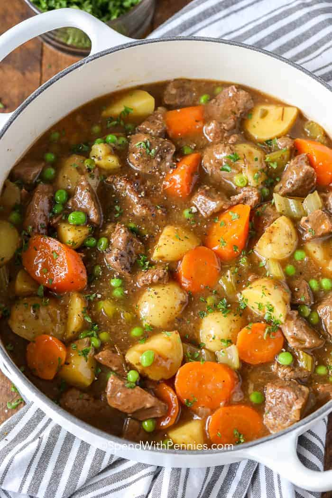

Beef stew

Decription
Beef stew is a classic dinner staple in so many households around the world.
There are soup and stew adaptations of beef stew. This is one of them.
Ingredients
- Onions
- Pepper
- Beef
- Pepper and onions
- Seasonings
- Olive oil
- Potatoes
Steps
- Combine flour, garlic powder and salt & pepper. Toss beef in flour mixture.
- Heat olive oil in a large Dutch oven or pot. Cook the beef and onions until browned.
- Add seasonings
- Add 2 cups of water to soften onions
- Add potatoes